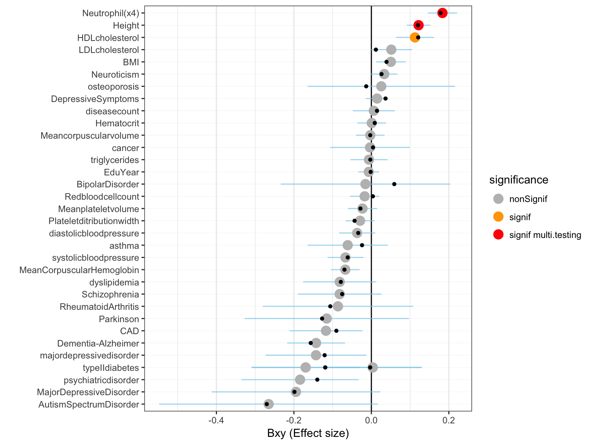

This document applies the mtCOJO tool to our data. It allows to check if the causal effect of Vitamin-D on several traits can be biaised by other risk factors
mtCOJO allows to build a new GWAS summary statistics for a trait using summary statistics of one or several other risk factors. Here are the risk factor we considere in our study:
We considered these risk factors one by one in a first step, and then considered them all together.
The input of mtCOJO are:
This script run mtCOJO. The target trait is VitaminD. The related risk factor is height. It gives me as output a new GWAS summary statistics corrected for height.
# Specific repo
cd /shares/compbio/Group-Wray/YanHoltz/VITAMIND_XIA_ET_AL/8_MTCOJO
# Build mbfile
ls /gpfs/gpfs01/polaris/Q0286/UKBiobank/v2EURu_HM3/ukbEURu_imp_chr*bed | sed 's/.bed//' > mtcojo_mbfile.txt
# Build mtcojo file. One per risk factor
# BMI
echo "vitaminD /shares/compbio/Group-Wray/YanHoltz/DATA/GWAS/XiaEtAl_VitaminD/GWAS_vitaminD_XiaEtAL.ma" > list_of_trait_BMI.txt
echo "BMI /shares/compbio/Group-Wray/YanHoltz/DATA/GWAS/GWAS_SUMSTAT/height_giant_2014.txt" >> list_of_trait_BMI.txt
tmp_command="gcta64 --mbfile mtcojo_mbfile.txt --mtcojo-file list_of_trait_BMI.txt --ref-ld-chr eur_w_ld_chr/ --w-ld-chr eur_w_ld_chr/ --out mtcojo_BMI_result_vitaminD"
qsubshcom "$tmp_command" 1 30G mtCOJO 10:00:00 ""
# SMOKE
echo "vitaminD /shares/compbio/Group-Wray/YanHoltz/DATA/GWAS/XiaEtAl_VitaminD/GWAS_vitaminD_XiaEtAL.ma" > list_of_trait_SMOKE.txt
echo "SMOKE /shares/compbio/Group-Wray/YanHoltz/DATA/GWAS/GWAS_SUMSTAT/ukbEUR_SI_cojo.txt" >> list_of_trait_SMOKE.txt
tmp_command="gcta64 --mbfile mtcojo_mbfile.txt --mtcojo-file list_of_trait_SMOKE.txt --ref-ld-chr eur_w_ld_chr/ --w-ld-chr eur_w_ld_chr/ --out mtcojo_SMOKE_result_vitaminD"
qsubshcom "$tmp_command" 1 30G mtCOJO 10:00:00 ""
# ALL
echo "vitaminD /shares/compbio/Group-Wray/YanHoltz/DATA/GWAS/XiaEtAl_VitaminD/GWAS_vitaminD_XiaEtAL.ma" > list_of_trait_ALL.txt
echo "BMI /shares/compbio/Group-Wray/YanHoltz/DATA/GWAS/GWAS_SUMSTAT/height_giant_2014.txt" >> list_of_trait_ALL.txt
echo "SMOKE /shares/compbio/Group-Wray/YanHoltz/DATA/GWAS/GWAS_SUMSTAT/ukbEUR_SI_cojo.txt" >> list_of_trait_ALL.txt
tmp_command="gcta64 --mbfile mtcojo_mbfile.txt --mtcojo-file list_of_trait_ALL.txt --ref-ld-chr eur_w_ld_chr/ --w-ld-chr eur_w_ld_chr/ --out mtcojo_ALL_result_vitaminD"
qsubshcom "$tmp_command" 1 30G mtCOJO 10:00:00 ""I now have a several files called mtcojo_*_result_vitaminD_result.mtcojo.cma that are a GWAS summary statistics for Vitamin-D corrected for all my Risk factors.
I can re run GSMR on this new GWAS summary statistics:
myRiskFact=$(echo "BMI")
# Specific repo
cd /shares/compbio/Group-Wray/YanHoltz/VITAMIND_XIA_ET_AL/8_MTCOJO/
mkdir GSMR_$myRiskFact
cd /shares/compbio/Group-Wray/YanHoltz/VITAMIND_XIA_ET_AL/8_MTCOJO/GSMR_$myRiskFact
# Prepare a file that gives the location of every b-file (one per chromosome)
ls /gpfs/gpfs01/polaris/Q0286/UKBiobank/v2EURu_HM3/ukbEURu_imp_chr*_v2_HM3_QC.bed | sed 's/.bed//' > gsmr_ref_data.txt
# prepare a file that gives the link to the GWAS result for the risk factor = Vitamin D. After correction for risk factors
cat /shares/compbio/Group-Wray/YanHoltz/VITAMIND_XIA_ET_AL/8_MTCOJO/mtcojo_${myRiskFact}_result_vitaminD.mtcojo.cma | cut -f1-8 > file.ma
a=$(pwd)
echo "vitaminD $a/file.ma" > gsmr_exposure.txt
# prepare ONE file that lists all the outcomes. This file has been build in Excel format locally
cp /shares/compbio/Group-Wray/YanHoltz/VITAMIND_XIA_ET_AL/3_GSMR/gsmr_outcome.txt .
# Split this file: one file per outcome:
split -l 1 --numeric-suffixes gsmr_outcome.txt
for i in x0* ; do a=$(echo $i | sed 's/x0/x/') ; mv $i $a ; done
# send an array of GSMR
tmp_command="gcta64 --mbfile gsmr_ref_data.txt --gsmr-file gsmr_exposure.txt x{TASK_ID} --gsmr-direction 0 --out gsmr_aftermtcojo${myRiskFact}_result_vitaminDXiaEtAl_{TASK_ID}"
qsubshcom "$tmp_command" 1 30G mtCOJO_GSMR_array 10:00:00 "-array=1-72"
# Once it's over, concatenate the results in a unique file
myRiskFact=$(echo "SMOKE")
cd /shares/compbio/Group-Wray/YanHoltz/VITAMIND_XIA_ET_AL/8_MTCOJO/GSMR_${myRiskFact}
cat gsmr_aftermtcojo*gsmr | head -1 > gsmr_aftermtcojo${myRiskFact}_result_vitaminDXiaEtAl.gsmr
cat gsmr_aftermtcojo*gsmr | grep -v "Exposure" >> gsmr_aftermtcojo${myRiskFact}_result_vitaminDXiaEtAl.gsmr
rm *[0-9].gsmr x* *badsnps qsub* *logTransfer the results locally for further analysis.
# Then from locally to delta
cd /Users/y.holtz/Dropbox/QBI/4_UK_BIOBANK_GWAS_PROJECT/VitaminD-GWAS/0_DATA
scp y.holtz@delta.imb.uq.edu.au:/shares/compbio/Group-Wray/YanHoltz/VITAMIND_XIA_ET_AL/8_MTCOJO/GSMR*/gsmr_aftermtcojo*_result_vitaminDXiaEtAl.gsmr .# A function that format a gsmr result
plot_primary <- function(file){
# Read gsmr result after mtcojo
gsmr=read.table(file, header = T)
# Show the information of GSMR withour mtCOJO
before <- read.table("0_DATA/gsmr_result_vitaminDXiaEtAl.gsmr", header = T)
before <- before %>%
dplyr::select(Outcome, bxy, p)
colnames(before) <- c("Outcome", "bxy_before", "p_before")
# Merge
gsmr <- merge(gsmr, before, by.x="Outcome", by.y="Outcome", all.x=T)
# Read the meaning of files:
meaning=read.table("0_DATA/list_of_traits_GSMR.csv", header=T, sep=",")
primary <- gsmr %>% filter( Outcome %in% meaning$Trait[ which(meaning$Main=="X") ] )
secondary <- gsmr %>% filter( Outcome %in% meaning$Trait[ which(meaning$Main!="X") ] )
# Compute thresholds
thres_primary <- 0.05 / nrow(primary)
thres_secondary <- 0.05 / nrow(secondary)
primary %>%
arrange(bxy) %>%
filter(!is.na(bxy) ) %>%
mutate(name=factor(Outcome, unique(Outcome))) %>%
mutate(significance=ifelse(p<thres_primary, "signif multi.testing", ifelse(p<0.05, "signif", "nonSignif") ) ) %>%
mutate(significance_before=ifelse(p_before<thres_primary, "signif multi.testing", ifelse(p<0.05, "signif", "nonSignif") ) ) %>%
ggplot( aes(x=name, y=bxy)) +
geom_hline( yintercept=0 ) +
geom_segment( aes(x=name, xend=name, y=bxy-se, yend=bxy+se), color="skyblue", alpha=0.7) +
geom_point(aes(color=significance), size=4) +
geom_point(aes(y=bxy_before), size=2, shape=20) +
scale_color_manual( values=c("grey", "orange", "red")) +
coord_flip() +
theme_bw() +
theme( panel.grid.major.y = element_line(size=0.1)) +
ylab("Bxy (Effect size)") +
xlab("")
}
plot_secondary <- function(file){
# Read gsmr result after mtcojo
gsmr=read.table(file, header = T)
# Show the information of GSMR withour mtCOJO
before <- read.table("0_DATA/gsmr_result_vitaminDXiaEtAl.gsmr", header = T)
before <- before %>%
dplyr::select(Outcome, bxy, p)
colnames(before) <- c("Outcome", "bxy_before", "p_before")
# Merge
gsmr <- merge(gsmr, before, by.x="Outcome", by.y="Outcome", all.x=T)
# Read the meaning of files:
meaning=read.table("0_DATA/list_of_traits_GSMR.csv", header=T, sep=",")
primary <- gsmr %>% filter( Outcome %in% meaning$Trait[ which(meaning$Main=="X") ] )
secondary <- gsmr %>% filter( Outcome %in% meaning$Trait[ which(meaning$Main!="X") ] )
# Compute thresholds
thres_primary <- 0.05 / nrow(primary)
thres_secondary <- 0.05 / nrow(secondary)
secondary %>%
arrange(bxy) %>%
filter(!is.na(bxy) ) %>%
mutate(name=factor(Outcome, unique(Outcome))) %>%
mutate(significance=ifelse(p<thres_secondary, "signif multi.testing", ifelse(p<0.05, "signif", "nonSignif") ) ) %>%
mutate(significance_before=ifelse(p_before<thres_secondary, "signif multi.testing", ifelse(p<0.05, "signif", "nonSignif") ) ) %>%
ggplot( aes(x=name, y=bxy)) +
geom_hline( yintercept=0 ) +
geom_segment( aes(x=name, xend=name, y=bxy-se, yend=bxy+se), color="skyblue", alpha=0.7) +
geom_point(aes(color=significance), size=4) +
geom_point(aes(y=bxy_before), size=2, shape=20) +
scale_color_manual( values=c("grey", "orange", "red")) +
coord_flip() +
theme_bw() +
theme( panel.grid.major.y = element_line(size=0.1)) +
ylab("Bxy (Effect size)") +
xlab("")
}Primary traits
plot_primary("0_DATA/gsmr_aftermtcojoBMI_result_vitaminDXiaEtAl.gsmr")Secondary traits
plot_secondary("0_DATA/gsmr_aftermtcojoBMI_result_vitaminDXiaEtAl.gsmr")Figure: effect size (Bxy) of Vitamin D on all primary traits. Grey / orange / red points show significance of the causality. Blue lines show the standard error around the effect size. Black points shows the effect size before correction using mtCOJO
Primary traits
plot_primary("0_DATA/gsmr_aftermtcojoSMOKE_result_vitaminDXiaEtAl.gsmr")
Secondary traits
plot_secondary("0_DATA/gsmr_aftermtcojoSMOKE_result_vitaminDXiaEtAl.gsmr")Figure: effect size (Bxy) of Vitamin D on all primary traits. Grey / orange / red points show significance of the causality. Blue lines show the standard error around the effect size. Black points shows the effect size before correction using mtCOJO
A work by Yan Holtz
Yan.holtz.data@gmail.com